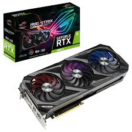

کارت گرافیک NVIDIA GeForce RTX 3060
RTX 3060 یکی از محبوبترین کارتهای گرافیک نسل Ampere انویدیا است، مناسب برای بازی با کیفیت 1080p و حتی 1440p با نرخ فریم بالا. این کارت با پشتیبانی از فناوری DLSS و Ray Tracing تجربهای واقعی از گرافیک نسل جدید ارائه میدهد.
۱۸,۰۰۰,۰۰۰ تومانمشخصات فنی:
- حافظه گرافیکی: 12GB GDDR6
- پهنای باند حافظه: 360 GB/s
- هستههای CUDA: 3584
- توان مصرفی (TDP): 170 وات
- تغذیه مورد نیاز: یک کانکتور 8 پین
- پشتیبانی از Ray Tracing: دارد
- پشتیبانی از DLSS: دارد
- میانگین FPS در GTA V: حدود 200
- میانگین FPS در Fortnite: حدود 230
- میانگین FPS در Cyberpunk 2077: حدود 95